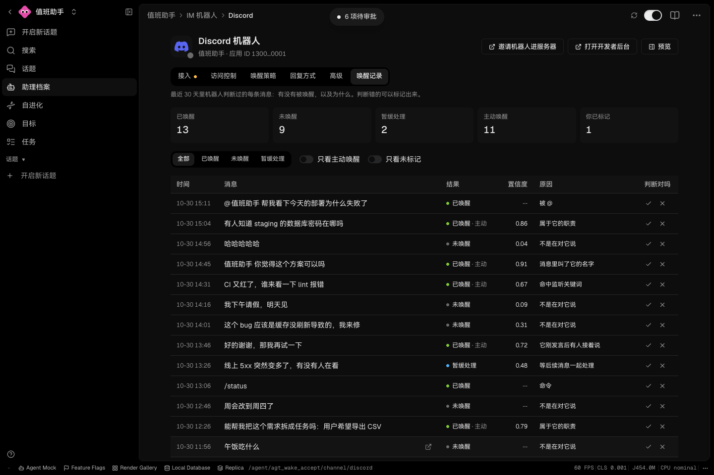
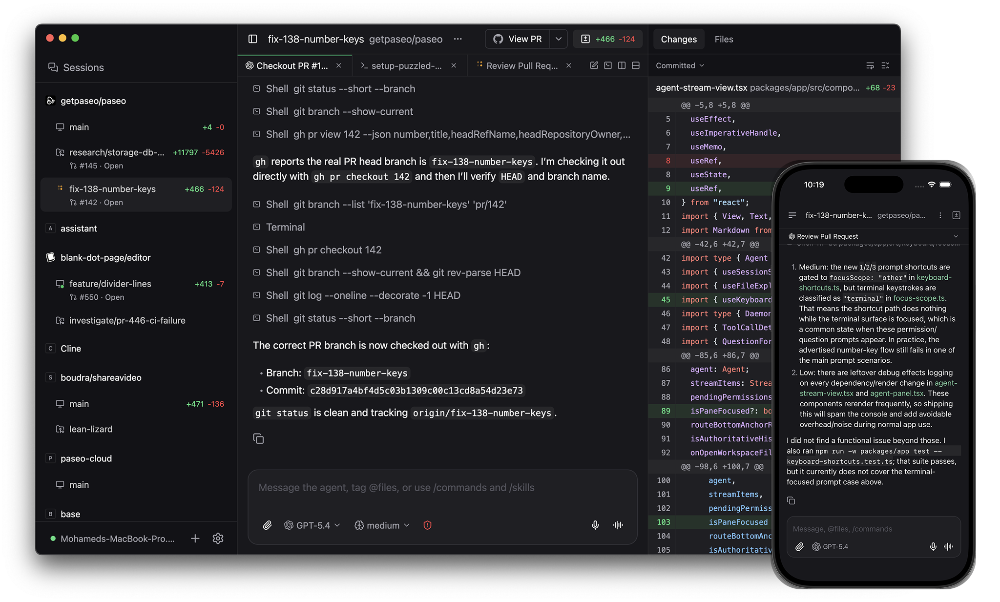

AI NEWS ISSUE 35
LobeHub는 먼저 참여하고, Paseo는 중단된 작업을 잇습니다
LobeHub는 대화에 도움이 될지 판단해 스스로 참여하고, Paseo는 관리 프로세스의 재시작으로 끊긴 작업을 기존 대화에서 이어갑니다. 두 업데이트가 사람이 봇을 호출하고 다시 지시하는 수고를 어떻게 줄이는지, 어디까지 맡길 수 있는지 살펴봅니다.
AT A GLANCE
30초 요약
- LobeHub 2.3.0은 선제적 참여를 기본으로 켜고, 봇을 활성화할지 판단한 결과와 이유를 기록합니다. 다만 Claude Code·Codex 등 외부 에이전트에 연결할 봇을 새로 만들 때는 이 기능을 직접 켜야 합니다.
- Paseo 0.15 베타는 관리 프로세스가 재시작돼도 터미널에서 실행 중인 프로그램을 유지하고, 중단된 에이전트에 기존 대화에서 작업을 이어가라는 지시를 보냅니다. 다만 0.14.0에서 처음 업그레이드하거나 Windows 데스크톱 앱을 업그레이드할 때는 터미널이 종료됩니다.
- 우리가 확인할 점은 필요한 상황에 참여했는지, 복구 뒤 같은 결과물을 중복으로 만들지 않았는지입니다. 응답 횟수뿐 아니라 사람이 호출하고 다시 지시하는 데 쓴 시간, 결과를 검토하는 데 쓴 시간도 함께 봐야 합니다.
자료 확인 2026년 11월 2일 한국시간 기준입니다. 두 릴리스는 11월 1일 공개됐으며, 공식 릴리스와 연결된 변경 설명을 대조했습니다. 제품 성능을 직접 측정하지는 않았습니다.
01 / LOBEHUB
호출을 기다리는 봇에서,
참여할 때를 판단하는 봇으로
팀 채널에 “배포 뒤 오류가 늘었는데 원인을 아는 사람이 있나요?”라는 메시지가 올라왔다고 해보겠습니다. 로그를 확인할 수 있는 봇이라면 사람이 따로 호출하기 전에 도움을 줄 수 있습니다. 이미 담당자가 답했거나 다른 사람에게 하는 말이라면 조용히 있는 편이 낫습니다.
LobeHub가 11월 1일 공개한 2.3.0의 Proactive Bot은 이처럼 봇이 참여할 때를 판단하는 기능입니다. 이전 2.2.21에서 제한적으로 선보였으며, 이번 버전부터는 기본으로 켜집니다. 봇은 지켜보는 채널의 메시지를 보고 대화에 참여할지, 메시지를 건너뛸지, 판단을 보류할지 정합니다. 봇 소유자는 채널 설정의 Wake policy → Proactive participation에서 이를 끌 수 있습니다. 공식 릴리스 ↗
기본 설정에는 예외가 있습니다. Claude Code·Codex 같은 외부 에이전트는 소유자의 기기에서 실행되고 CLI 사용 한도를 소모합니다. 변경 설명에 따르면 이런 에이전트에 연결할 봇을 새로 만들 때는 선제적 참여가 꺼진 상태로 시작합니다. 기존 봇의 설정에는 이 예외를 소급 적용하지 않으므로, 업데이트 후 실제 설정을 확인해야 합니다. 기본값과 외부 에이전트 예외 ↗
왜 말했고, 왜 조용했는지 살펴봅니다
새 Wake records 탭은 최근 30일의 활성화·건너뜀·보류 횟수와 선제적 활성화 횟수를 보여줍니다. 봇 소유자는 메시지별 판단 결과, 모델이 매긴 점수와 판단 이유를 확인하고, 판단이 맞았는지 틀렸는지 표시할 수 있습니다. 활성화된 뒤에도 에이전트가 답하지 않기로 할 수 있으므로, 활성화 횟수가 곧 답변 횟수는 아닙니다. 이런 경우도 기록에 표시됩니다. 메시지 미리보기는 보관 기간이 지나면 만료될 수 있고, 모델이 점수를 매기지 않은 판단에는 점수가 표시되지 않습니다.


맞음·틀림 표시는 검토 기록으로 남으며, 이후 참여 판단에 자동으로 반영되지는 않습니다. 팀은 봇이 놓친 질문과 불필요하게 끼어든 사례를 모아, 봇에게 맡길 역할이나 설정을 조정하는 데 이 기록을 활용할 수 있습니다. 판단 기록의 범위 ↗
“추가 모델 호출 없음”의 범위는 좁습니다
역할이 설정된 봇은 메시지가 담당 업무에 해당하는지뿐 아니라, 아직 답이 없는 질문에 지금 참여하면 도움이 되는지도 한 번의 모델 호출에서 함께 판단합니다. 개발진이 말한 “추가 모델 호출 없음”은 기존 판단에 이 질문을 더해도 모델을 한 번 더 호출하지 않는다는 뜻입니다. 선제적 참여 전체가 모델 호출이나 비용 없이 동작한다는 뜻은 아닙니다. 참여 판단 변경 설명 ↗
이번 릴리스에는 문서 공동 편집, 에이전트가 샌드박스에서 문서를 편집하는 기능, 채널 안의 대화 흐름 개선도 포함됐습니다. 대화에서 시작한 일을 협업 공간에서 이어가기 쉬워지는 변화입니다. 다만 대화에 참여할 권한과 운영 데이터를 변경할 권한은 업무에 맞게 따로 정해야 합니다.
자체 호스팅 환경에서 업데이트 전 확인할 점
2.3.0에는 시작 시 자동 실행되는 데이터베이스 마이그레이션 6개가 포함됩니다. 그중 0196은 메모리 테이블의 인덱스를 트랜잭션 안에서 만들며, 그동안 해당 테이블에 쓰기 작업을 할 수 없게 됩니다. 릴리스 문서는 테이블이 큰 환경에서 같은 인덱스를 미리 동시 생성하는 방법을 안내합니다. 실제로 적용하기 전에는 릴리스의 마이그레이션 안내와 자신의 데이터베이스 상태를 함께 확인해야 합니다.
02 / PASEO
터미널을 유지하는 일과,
에이전트를 다시 움직이는 일
Paseo는 여러 코딩 에이전트를 데스크톱과 모바일에서 관리하는 도구입니다. 11월 1일 공개한 0.15.0-beta.1에서는 백그라운드 관리 프로세스인 데몬이 재시작될 때 두 가지 동작을 개선했습니다. 터미널에서 실행 중인 프로그램은 계속 실행되도록 유지하고, 작업이 중단된 에이전트는 기존 대화를 다시 열어 작업을 이어가게 합니다. 공식 베타 릴리스 ↗


공식 변경 설명을 정리한 도식
데몬 재시작 뒤, 작업을 이어가는 두 방식
새 데몬이 기존 터미널에 다시 연결합니다.
Resume working. 지시를 보내 작업을 재개합니다.
자동 재개는 기본으로 켜져 있습니다. Host settings → Agents에서 끄거나 재개할 때 보낼 기본 지시문을 바꿀 수 있습니다. 대상은 중단 직전까지 작업 중이던 에이전트이며, 대기 중이던 에이전트에 새 작업을 시키지는 않습니다. 한 에이전트의 작업을 재개하지 못해도 다른 에이전트의 복구는 계속됩니다. 다만 실패한 재개를 자동으로 재시도하는 기능은 이번 버전에 포함되지 않았습니다. 자동 재개의 대상과 제한 ↗
첫 업그레이드와 Windows에는 예외가 있습니다
0.14.0에서 처음 업그레이드할 때는 터미널이 종료됩니다. 새 데몬을 설치한 뒤부터 유지 기능이 적용되며, Windows 데스크톱 앱을 업그레이드할 때도 터미널이 종료됩니다. 데몬을 재시작하는 것과 앱을 종료하는 것은 구분해야 합니다. 공식 변경 설명에 따르면 일반적인 앱 종료나 데몬 정지 시에는 터미널도 닫힙니다. 터미널 유지 조건 ↗
대화를 이어도, 완료한 작업은 확인해야 합니다
예를 들어 에이전트가 장애 보고서를 저장한 직후, 완료 상태를 기록하기 전에 멈췄다고 해보겠습니다. 대화만 보고 다시 저장하면 같은 보고서가 두 개 생길 수 있습니다. 중복을 막으려면 작업 ID로 기존 결과물을 조회하고, 같은 ID로 여러 번 저장을 요청해도 한 번만 반영하도록 해야 합니다.
Paseo 개발진도 이번 변경이 작업을 정확히 한 번만 재개하거나 매 턴의 실행 내역을 영속적으로 기록하는 기능까지 제공하지는 않는다고 명시했습니다. 상태를 저장하고 재개 지시를 전달하는 사이에 장애가 나면, 작업을 재개하지 못하거나 같은 작업을 반복할 수 있습니다. 도입 전에는 사용하는 에이전트와 도구 조합에서 중단된 작업이 어디까지 복구되는지 확인하는 편이 좋겠습니다.
OUR VIEW
호출하는 수고와,
다시 확인하는 수고를 함께 줄입니다
LobeHub는 사람이 봇을 불러 일을 맡기는 수고를, Paseo는 중단된 일을 다시 설명하는 수고를 줄이려 합니다. 두 변화의 효과는 필요한 일을 제때 시작하고, 결과를 확인할 수 있는 상태로 마쳤는지로 판단해야 합니다. 불필요한 답변을 걸러내거나 중복 결과를 정리하는 데 시간이 더 든다면, 그 부담도 함께 봐야 합니다.
모임에서는 에이전트가 대화에 참여할지 판단하고, 실행기가 허용된 도구와 작업 상태를 관리하도록 역할을 나눠볼 수 있겠습니다. 사람이 개입한 횟수와 함께 재지시·확인·수정에 쓴 시간을 각각 기록하면, 자동화로 어떤 반복 업무가 얼마나 줄었는지 살펴볼 수 있습니다.
OUR LAB · 실험 제안
장애 알림을 골라 조사하고,
중단돼도 보고서는 한 건만 남깁니다
가상 팀 채널에 사건 ID가 INC-017인 알림이 올라옵니다. “결제 테스트의 오류율이 높아졌습니다. 확인한 사람이 있나요?” 아직 담당자가 답하지 않았다면 에이전트가 읽기 전용 로그를 조회해 근거를 담은 보고서 초안을 만듭니다. 반대로 조사를 시작하기 전에 “담당자가 조사 중입니다”라는 후속 메시지가 왔다면 새 조사를 시작하지 않아야 합니다.
두 업데이트에서 아이디어를 얻은 실험 제안이며, 아직 실행하지 않았습니다. 아래에서 사용할 입력 재생기·작업 기록 기능·모의 보고서 저장소는 별도로 구현해야 합니다. LobeHub와 Paseo의 자동 연동을 전제로 한 실험은 아닙니다.
가상 입력과 기대 동작
참여 판단과 완료 기록을 분리합니다
- 01 · 대화 입력메시지와 앞선 대화를 전달사건 ID, 시각, 담당자의 응답 여부를 포함합니다.
- 02 · 에이전트 판단참여·건너뜀·보류 판단과 이유 반환참여하기로 판단한 사건만 실행기에 넘깁니다. 시간 초과와 형식 오류는 별도 실패로 기록합니다.
- 03 · 실행기가상 로그 조회 후 보고서 저장읽기 전용 조회와 모의 저장만 허용하고, 사건 ID로 기존 결과를 확인합니다.
- 04 · 검증기근거·상태·중복 여부 대조완료 표시만 보지 않고 보고서 내용과 저장 건수를 확인합니다.
먼저 참여 판단만 비교합니다
설정 조정용 대화 6묶음과 별도의 평가용 대화 30묶음을 준비합니다. 평가용은 미해결 장애 10건, 이미 담당자가 처리 중인 장애 10건, 일반 대화 10건으로 구성합니다. 각 묶음에서 기대하는 판단과 그 근거는 사람이 미리 정하되, 에이전트에는 이 정답을 전달하지 않습니다.
첫 비교에서는 작업을 중단시키지 않고 참여 판단만 살펴봅니다. 사람이 명시적으로 호출할 때만 시작하는 방식과 에이전트가 스스로 참여 여부를 판단하는 방식에 같은 대화·로그·모델·지침을 사용하고, 시작 조건만 다르게 설정합니다. 명시적 호출 방식에서는 사람이 처리해야 할 10건을 골라 봇을 호출하는 시간도 잽니다. 선제적 방식에서는 개입해야 할 10건 중 찾아낸 수, 나머지 20건에 불필요하게 개입한 수, 판단을 보류하거나 실패한 수를 각각 기록합니다.
그다음 같은 작업으로 복구 방식을 비교합니다
두 번째 비교에서는 참여 판단 결과를 고정해 똑같은 작업을 시작합니다. 자동 재개를 끈 경우와 켠 경우를 비교하되, 작업 기록과 중복 방지 방식은 동일하게 유지합니다. 이렇게 해야 참여 판단의 차이가 복구 성과에 섞이지 않습니다.
| 중단 직전 | 다시 시작할 때 | 기대 결과 |
|---|---|---|
| 조사는 시작했지만 로그 조회 전 | 작업 ID와 남은 단계를 읽고 조회 | 근거가 있는 보고서 1건 |
| 로그 조회 성공, 보고서 저장 전 | 보관한 조회 결과를 확인해 작성 | 불필요한 재조회 여부도 기록 |
| 보고서는 저장됐지만 완료 기록 전 | 같은 ID의 기존 보고서를 조회·검증 | 추가 생성 0건, 완료 기록 복구 |
| 저장 요청이 시간 초과돼 결과를 알 수 없음 | 저장소에서 같은 ID의 보고서를 조회하고, 확인할 수 없으면 보류 | 확인 전 완료로 표시하지 않음 |
모의 저장소는 같은 사건 ID로 저장을 여러 번 요청해도 보고서 한 건만 남기되, 각 시도는 모두 기록하도록 만듭니다. 대화와 로그는 고정된 파일을 사용하고, 외부 알림이나 실제 배포 도구는 연결하지 않습니다. 매회 저장소를 같은 초기 상태로 되돌린 뒤 위 네 지점에서 각각 세 번씩 작업을 중단해, 자동 재개를 끈 경우와 켠 경우를 각각 12회 시험합니다. 별도의 임시 환경에서 관리 프로세스만 중단하며, 자동 재개에 실패한 작업은 사람이 확인하도록 남겨둡니다.
도입 판단에 쓸 결과물을 남깁니다
참여 판단에서는 미해결 장애 10건 중 9건 이상을 찾아내고, 나머지 20건에서 불필요한 개입은 1건 이하인 것을 통과 기준으로 정해볼 수 있습니다. 복구 시험에서는 방식별 12회의 결과를 검증된 완료·올바른 보류·실패로 나누고, 중복 보고서 0건, 근거 없는 완료 0건인지 확인합니다. 이 기준은 준비한 사례를 평가하기 위한 것이며, 실제 운영에서의 신뢰도를 보장하지는 않습니다.
각 방식에서 사람이 다시 지시한 횟수, 검토·수정에 쓴 시간, 복구에 걸린 시간, 모델 사용량과 재시도 횟수도 기록합니다. 완료 한 건당 사람의 개입 횟수는 실패·보류를 처리한 횟수까지 포함한 전체 개입 횟수를 검증된 완료 건수로 나눠 계산합니다. 완료가 0건이면 이 값은 계산하지 않습니다. 같은 품질을 유지하면서 사람의 총작업 시간이 줄어드는지 살펴보고 다음 시험의 범위를 정합니다.
대화·정답·가상 로그는 버전을 붙여 보관합니다. 참여 판단, 작업 상태와 중단 지점, 보고서 저장 이력도 기록해 방식별 비교표로 정리합니다. 미리 정한 응답으로 중복 방지와 상태 전환을 먼저 검사하고 실제 모델을 쓰는 평가는 별도로 진행하면, 모델이나 복구 방식을 바꾼 뒤에도 같은 조건으로 다시 시험할 수 있습니다.
읽은 자료
- LobeHub · v2.3.0 공식 릴리스 2026. 11. 01 · 한국시간 18:12 공개
- LobeHub · 선제적 참여 기본값과 외부 에이전트 예외 / 도움이 될지 판단하는 질문 추가
- LobeHub · Wake records의 기록·표시 범위 / 공식 검수 화면 2026. 10. 30
- Paseo · v0.15.0-beta.1 공식 릴리스 2026. 11. 01 · 한국시간 15:57 공개 · 베타
- Paseo · 중단된 에이전트 자동 재개 / 터미널 유지와 종료 조건
- Paseo · 공식 한국어 README와 제품 소개 이미지 / 공식 사이트 데스크톱·모바일 사용 방식 확인
- DeepSeek · dsh-superagent 연구 프로토타입 README 관련 배경 · 공식 제품과 구현 범위의 한계 명시
발표 기능과 개발진의 검증 설명, 헬로우 휴먼의 해석·실험 제안을 구분했습니다. Wake records 이미지는 공급사의 검수 자료, Paseo 이미지는 공식 제품 소개 자료이며, 복구 도식과 실험 표는 이 기사에서 구성했습니다.